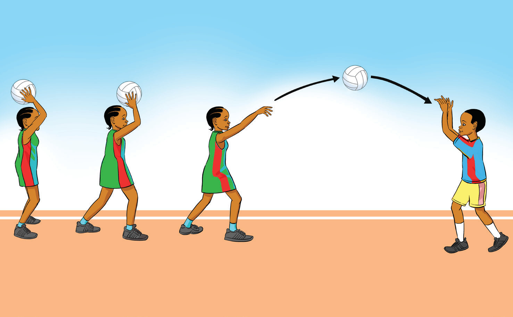

Overhead pass
An overhead pass is a high pass thrown with both hands from above the head. The ball is held above the head and thrown with a firm push of the arms; making it ideal for passing over an opponent’s head reaching teammates further in the court. This pass is especially useful when a player is under pressure, as it helps cover more distance efficiently. To practice the overhead pass, follow these steps:
- (i)Stand tall, facing the direction of the throw with knees slightly bent and feet hip-width apart;
- (ii)Position hands on either side of the ball, with fingers spread out and pointing upward, and hold the ball over the head, as shown in Figure 1.8;
- (iii)Bend arms to allow the ball to drop back slightly, ensuring elbows point forward before releasing;
- (iv)Step forward with the dominant foot while releasing the ball to maximize power; and
- (v)Follow through with arms, wrists, and fingers for accuracy and control of the ball.

abc
Activity 1.5
Using various drills, practice an overhead pass repetitively to master the skill.
SPORTS STUDIES FORM TWO.indd 99/17/25 9:54 AM